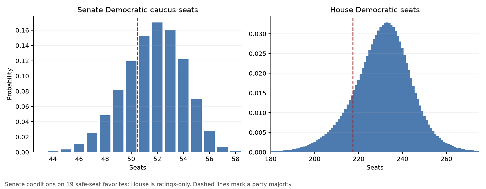
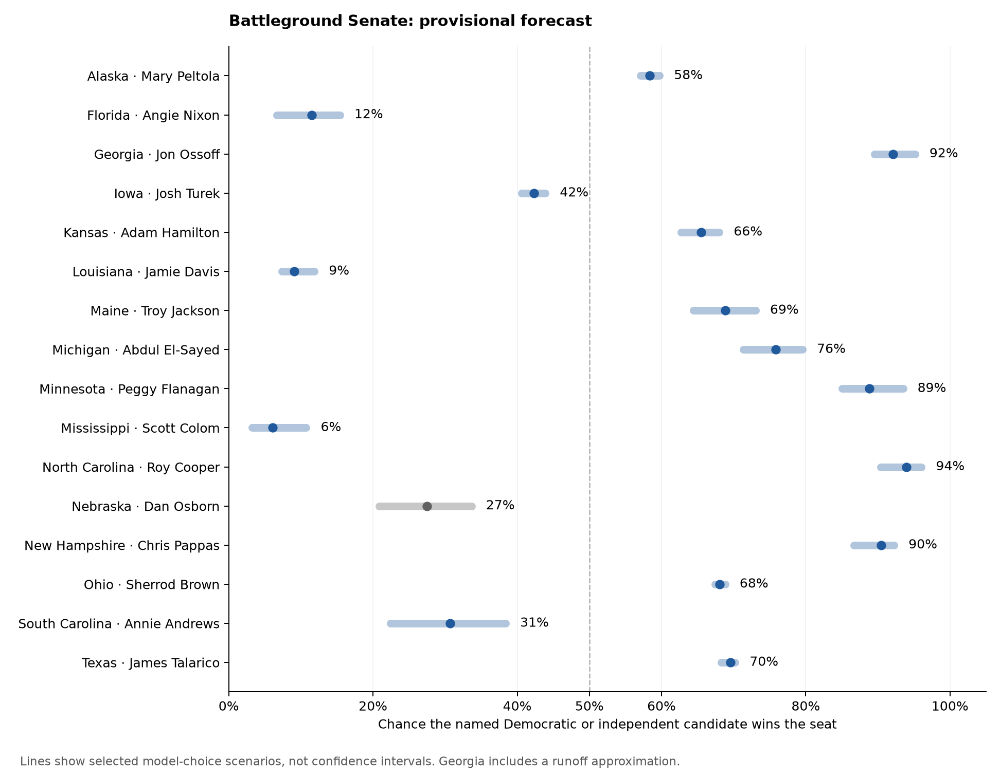

Public export of the stopped research checkpoint. Forecast percentages are chances of winning, not predicted vote shares. Local working-audit attachments are omitted from this public export; the forecast downloads and external source links are retained. Interactive charts · Timestamp verification
RESEARCH CHECKPOINT · November 02, 2026, 1:52 PM Eastern
2026 battleground Senate and House forecast
Forecast geography: statewide Senate contests and individual House districts. County- and precinct-level vote or turnout projections have not been built.
Median: 52 Democratic-caucus seats. Central 80% range: 49–55.
Republican majority including the vice president: 27%. About 2.1% produces 50 D-caucus / 49 R / Osborn independent, with organization unresolved. Assumes the 19 safe-seat favorites win.
Median: 232 Democratic seats. Central 80% range: 213–247.
Republican majority: 15%. Adding district polls has not improved the matched historical tests so far. These probabilities describe party seat majorities, not a Speaker ballot.
The Senate result changes from 65% to 77% Democratic-majority probability across the selected polling weights, rating priors and shared-error scenarios. That is a model-choice sensitivity range, not a confidence interval. House dependence-prior choices produce roughly 85%–89% Democratic-majority probability; weaker or stronger fixed dependence produces a wider range.
Holding Senate dependence and the rating calibration fixed, ratings alone give 66% Democratic control, the equal poll/rating reference gives 71%, and polling wherever coverage qualifies gives 76%. The polling scenario still uses ratings in Louisiana and Mississippi. All three assume the same 19 safe favorites win. Component-weight comparison.

Every battleground Senate contest. All 16 modeled major-candidate pairs match official election sources. The numerical favorite column names the candidate with the higher modeled win probability and gives that probability. Hinson has a modest edge in competitive Iowa. Alaska, Kansas, Maine, Ohio and Texas have Democratic advantages; none is a firm call. Chamber medians account for uncertainty across all races.
| State | Democratic / independent candidate | Republican candidate | Numerical favorite · win chance | Assessment | Poll average D/I minus R, points | What matters |
|---|---|---|---|---|---|---|
| Alaska | Mary Peltola (D) | Dan S. Sullivan (R) | Mary Peltola (D) · 58% | Toss-up | +0.8 | Uses documented final rounds and two-candidate proxies in a 21-day window. The recovered Rasmussen final tabulation retains a conflicting second-choice label and sample-definition caveat. |
| Florida | Angie Nixon (D) | Ashley Moody (R) | Ashley Moody (R) · 88% | Likely R | -5.3 | Republican favored. The Stetson poll itself shows meaningful sensitivity to turnout weighting. |
| Georgia | Jon Ossoff (D) | Mike Collins (R) | Jon Ossoff (D) · 92% | Likely D | +7.8 | Printed nominees are Collins and Ossoff; only certified write-in votes count. Majority required; runoff bounds are separate. |
| Iowa | Josh Turek (D) | Ashley Hinson (R) | Ashley Hinson (R) · 58% | Toss-up | -0.6 | Hinson has a modest edge after Sabato’s final Lean R rating; the race remains competitive. |
| Kansas | Adam Hamilton (D) | Roger Marshall (R) | Adam Hamilton (D) · 66% | Lean D | +2.9 | Polls favor Hamilton. Sabato now rates Lean D; Cook and Inside remain Toss-up. |
| Louisiana | Jamie Davis (D) | Julia Letlow (R) | Julia Letlow (R) · 91% | Likely R | Sparse; not used | Ratings-only estimate. Two recent polling firms have Democratic campaign or party sponsorship; nonpartisan corroboration remains inadequate. |
| Maine | Troy Jackson (D) | Susan Collins (R) | Troy Jackson (D) · 69% | Lean D | +4.0 | Polls favor Jackson. Sabato now rates Lean D; Cook and Inside remain Toss-up. UNH sample size is unresolved; write-ins may require RCV. |
| Michigan | Abdul El-Sayed (D) | Mike Rogers (R) | Abdul El-Sayed (D) · 76% | Lean D | +5.2 | Polls and two ratings favor El-Sayed, but a shared polling error remains material. |
| Minnesota | Peggy Flanagan (D) | Michele Tafoya (R) | Peggy Flanagan (D) · 89% | Likely D | +5.5 | Flanagan favored; the polling lead is sensitive to which recent firms are retained. |
| Mississippi | Scott Colom (D) | Cindy Hyde-Smith (R) | Cindy Hyde-Smith (R) · 94% | Likely R | Sparse; not used | Ratings-only estimate. Too little independently verified public polling for a reliable polling average. |
| North Carolina | Roy Cooper (D) | Michael Whatley (R) | Roy Cooper (D) · 94% | Likely D | +9.4 | Cooper has the largest modeled polling lead among these battlegrounds. |
| Nebraska | Dan Osborn (I) | Pete Ricketts (R) | Pete Ricketts (R) · 73% | Lean R | -1.5 | Osborn is independent and has not promised to caucus with either party. An Osborn win is not a Democratic seat. |
| New Hampshire | Chris Pappas (D) | John Sununu (R) | Chris Pappas (D) · 90% | Likely D | +9.4 | Pappas favored. The original UNH report resolves the selected 54–42 leaner question’s reported N as 2,035, distinct from 2,040 parent likely voters. |
| Ohio | Sherrod Brown (D) | Jon Husted (R) | Sherrod Brown (D) · 68% | Lean D | +2.4 | Brown modestly favored. A small polling miss can reverse the outcome. |
| South Carolina | Annie Andrews (D) | Darline Graham (R) | Darline Graham (R) · 69% | Lean R | -0.7 | Polls are much closer than the ratings. Sponsor and firm-selection choices matter. |
| Texas | James Talarico (D) | Ken Paxton (R) | James Talarico (D) · 70% | Lean D | +2.8 | Talarico modestly favored across a broad polling field. Forced-choice and first-ballot results are distinguished in the source audit. |
Download the Senate forecast table · Full probability and methodology fields

Every competitive House district. These are the union of non-safe ratings from Cook, Inside Elections and Sabato. District probabilities currently use historically calibrated ratings only. Official sources support the displayed main candidates or party field in 97 of these 97 districts, including all six competitive California districts. Every modeled pair or party field now has official support; this is not a complete ballot roster. Candidate evidence for each district.
Sabato’s November 2 final ratings add Michigan’s 1st and Tennessee’s 5th to the tracked competitive set. Their main candidates are verified against official nominee records. Final rating changes and full House table.
Alaska’s main non-Republican contender is Bill Hill, an independent. California’s 6th is Richard Pan against independent Kevin Kiley. Neither independent is automatically assigned to a party caucus. The House model respects same-party and uncontested candidate structures.
Former battleground: Louisiana’s 5th is now Safe Republican in all three rating sources and has left the active table. Its Republican party field has a >99% modeled win chance. The event remains the eventual winning party, including a December 12 runoff if required. Official party field.
Kiley reportedly plans not to caucus with Republicans in the next Congress, while Hill still declines to name a caucus and has expressed opposition to Mike Johnson as Speaker. Neither statement establishes a Democratic caucus or Speaker pledge, so both remain unassigned in the party-seat accounting. Kiley’s September interview · Hill’s October 29 interview · Dated statement audit.
The numerical favorite is the candidate or party field with the higher modeled win probability. Exactly tied estimates are labeled “Even”; their downloaded favorite fields remain unassigned.
| District | First candidate / party field | Opponent / party field | Numerical favorite · win chance | Cook / Inside / Sabato |
|---|---|---|---|---|
| AK-AL | Bill Hill (I) | Nick Begich (R) | Nick Begich (R) · 88% | Lean R / Likely R / Lean R |
| AL-02 | Shomari Figures (D) | Rhett Marques (R) | Rhett Marques (R) · 63% | Lean R / Tilt R / Lean D |
| AR-02 | Chris Jones (D) | French Hill (R) | French Hill (R) · 96% | Likely R / Likely R / Likely R |
| AZ-01 | Amish Shah (D) | Jay Feely (R) | Amish Shah (D) · 80% | Lean D / Tilt D / Lean D |
| AZ-02 | Jonathan Nez (D) | Eli Crane (R) | Eli Crane (R) · 85% | Lean R / Lean R / Lean R |
| AZ-06 | JoAnna Mendoza (D) | Juan Ciscomani (R) | JoAnna Mendoza (D) · 80% | Lean D / Tilt D / Lean D |
| CA-06 | Richard Pan (D) | Kevin Kiley (I) | Richard Pan (D) · 98% | Safe D / Likely D / Likely D |
| CA-13 | Adam Gray (D) | Kevin Lincoln (R) | Adam Gray (D) · 89% | Likely D / Tilt D / Likely D |
| CA-21 | Jim Costa (D) | Kyle Kirkland (R) | Jim Costa (D) · 99% | Safe D / Safe D / Likely D |
| CA-22 | Randy Villegas (D) | David Valadao (R) | Randy Villegas (D) · 58% | Toss-up / Toss-up / Lean D |
| CA-45 | Derek Tran (D) | Chuong Vo (R) | Derek Tran (D) · 98% | Likely D / Safe D / Likely D |
| CA-48 | Marni Von Wilpert (D) | Jim Desmond (R) | Marni Von Wilpert (D) · 88% | Lean D / Tilt D / Likely D |
| CO-03 | Dwayne Romero (D) | Jeff Hurd (R) | Jeff Hurd (R) · 89% | Likely R / Likely R / Lean R |
| CO-04 | Eileen Laubacher (D) | Lauren Boebert (R) | Lauren Boebert (R) · 88% | Lean R / Likely R / Lean R |
| CO-05 | Jessica Killin (D) | Jeff Crank (R) | Jessica Killin (D) · 58% | Toss-up / Toss-up / Lean D |
| CO-08 | Manny Rutinel (D) | Gabe Evans (R) | Manny Rutinel (D) · 80% | Lean D / Tilt D / Lean D |
| FL-07 | Bale Dalton (D) | Ryan Elijah (R) | Ryan Elijah (R) · 88% | Lean R / Likely R / Lean R |
| FL-09 | Darren Soto (D) | Dan Green (R) | Dan Green (R) · 88% | Lean R / Likely R / Lean R |
| FL-12 | Kimberly Overman (D) | Gus Bilirakis (R) | Gus Bilirakis (R) · 99% | Safe R / Safe R / Likely R |
| FL-13 | Leela Gray (D) | Anna Paulina Luna (R) | Anna Paulina Luna (R) · 85% | Lean R / Lean R / Lean R |
| FL-14 | Kathy Castor (D) | Mike Beltran (R) | Kathy Castor (D) · 66% | Toss-up / Tilt D / Lean D |
| FL-16 | Kelly Kirschner (D) | Sydney Gruters (R) | Sydney Gruters (R) · 96% | Likely R / Likely R / Likely R |
| FL-22 | Pia Dandiya (D) | Casey Askar (R) | Pia Dandiya (D) · 58% | Toss-up / Toss-up / Lean D |
| FL-25 | Jared Moskowitz (D) | Scott Singer (R) | Jared Moskowitz (D) · 80% | Lean D / Tilt D / Lean D |
| FL-27 | Eliott Rodriguez (D) | Maria Salazar (R) | Maria Salazar (R) · 85% | Lean R / Lean R / Lean R |
| IA-01 | Christina Bohannan (D) | Mariannette Miller-Meeks (R) | Christina Bohannan (D) · 80% | Lean D / Tilt D / Lean D |
| IA-02 | Lindsay James (D) | Joe Mitchell (R) | Lindsay James (D) · 58% | Toss-up / Toss-up / Lean D |
| IA-03 | Sarah Trone Garriott (D) | Zach Nunn (R) | Sarah Trone Garriott (D) · 80% | Lean D / Tilt D / Lean D |
| IN-01 | Frank Mrvan (D) | Barb Regnitz (R) | Frank Mrvan (D) · 96% | Likely D / Likely D / Likely D |
| IN-05 | J.D. Ford (D) | Victoria Spartz (R) | Victoria Spartz (R) · 95% | Lean R / Likely R / Likely R |
| KS-02 | Don Coover (D) | Derek Schmidt (R) | Derek Schmidt (R) · 96% | Likely R / Likely R / Likely R |
| KY-06 | Zach Dembo (D) | Ralph Alvarado (R) | Ralph Alvarado (R) · 58% | Toss-up / Toss-up / Lean R |
| MD-01 | Dan Schwartz (D) | Andy Harris (R) | Andy Harris (R) · 99% | Safe R / Safe R / Likely R |
| ME-02 | Matthew Dunlap (D) | Paul LePage (R) | Paul LePage (R) · 85% | Lean R / Lean R / Lean R |
| MI-01 | Callie Barr (D) | Jack Bergman (R) | Jack Bergman (R) · 99% | Safe R / Safe R / Likely R |
| MI-03 | Hillary Scholten (D) | Terri DeBoer (R) | Hillary Scholten (D) · 98% | Safe D / Likely D / Safe D |
| MI-04 | Sean McCann (D) | Bill Huizenga (R) | Sean McCann (D) · 58% | Toss-up / Toss-up / Lean D |
| MI-07 | William Lawrence (D) | Tom Barrett (R) | William Lawrence (D) · 58% | Toss-up / Toss-up / Lean D |
| MI-08 | Kristen McDonald Rivet (D) | Thomas Smith (R) | Kristen McDonald Rivet (D) · 98% | Likely D / Safe D / Likely D |
| MI-10 | Christina Hines (D) | Michael Bouchard (R) | Christina Hines (D) · 51% | Toss-up / Tilt R / Lean D |
| MN-01 | Jake Johnson (D) | Brad Finstad (R) | Brad Finstad (R) · 85% | Lean R / Lean R / Lean R |
| MN-02 | Matt Little (D) | Eric Pratt (R) | Matt Little (D) · 96% | Likely D / Likely D / Likely D |
| MO-02 | Fred Wellman (D) | Ann Wagner (R) | Ann Wagner (R) · 90% | Likely R / Safe R / Lean R |
| MT-01 | Sam Forstag (D) | Aaron Flint (R) | Sam Forstag (D) · 58% | Toss-up / Toss-up / Lean D |
| NC-01 | Don Davis (D) | Laurie Buckhout (R) | Don Davis (D) · 66% | Toss-up / Tilt D / Lean D |
| NC-03 | Raymond Smith Jr. (D) | Greg Murphy (R) | Greg Murphy (R) · 96% | Likely R / Likely R / Likely R |
| NC-05 | Chuck Hubbard (D) | Virginia Foxx (R) | Virginia Foxx (R) · 99% | Likely R / Safe R / Safe R |
| NC-09 | Richard Ojeda (D) | Richard Hudson (R) | Richard Hudson (R) · 96% | Likely R / Likely R / Likely R |
| NC-11 | Jamie Ager (D) | Jennifer Balkcom (R) | Jamie Ager (D) · 80% | Lean D / Tilt D / Lean D |
| NC-13 | Paul Barringer (D) | Brad Knott (R) | Brad Knott (R) · 96% | Likely R / Likely R / Likely R |
| NE-01 | Chris Backemeyer (D) | Mike Flood (R) | Mike Flood (R) · 96% | Likely R / Likely R / Likely R |
| NE-02 | Denise Powell (D) | Brinker Harding (R) | Denise Powell (D) · 94% | Likely D / Lean D / Likely D |
| NH-01 | Stefany Shaheen (D) | Anthony DiLorenzo (R) | Stefany Shaheen (D) · 94% | Likely D / Lean D / Likely D |
| NH-02 | Maggie Goodlander (D) | Lily Tang Williams (R) | Maggie Goodlander (D) · 99% | Safe D / Safe D / Likely D |
| NJ-02 | Zack Mullock (D) | Jeff Van Drew (R) | Jeff Van Drew (R) · 89% | Likely R / Likely R / Lean R |
| NJ-07 | Rebecca Bennett (D) | Tom Kean Jr. (R) | Rebecca Bennett (D) · 80% | Lean D / Tilt D / Lean D |
| NJ-09 | Nellie Pou (D) | Rosie Pino (R) | Nellie Pou (D) · 98% | Likely D / Safe D / Likely D |
| NM-02 | Gabriel Vasquez (D) | Gregory Cunningham (R) | Gabriel Vasquez (D) · 80% | Lean D / Tilt D / Lean D |
| NV-01 | Dina Titus (D) | Carrie Buck (R) | Dina Titus (D) · 94% | Likely D / Lean D / Likely D |
| NV-02 | Teresa Benitez-Thompson (D) | David Flippo (R) | David Flippo (R) · 80% | Lean R / Tilt R / Lean R |
| NV-03 | Susie Lee (D) | Marty O'Donnell (R) | Susie Lee (D) · 94% | Likely D / Lean D / Likely D |
| NV-04 | Steven Horsford (D) | Cody Whipple (R) | Steven Horsford (D) · 96% | Likely D / Likely D / Likely D |
| NY-01 | Christopher Gallant (D) | Nicholas LaLota (R) | Nicholas LaLota (R) · 99% | Safe R / Safe R / Likely R |
| NY-03 | Thomas Suozzi (D) | Michael LiPetri (R) | Thomas Suozzi (D) · 87% | Likely D / Lean D / Lean D |
| NY-04 | Laura Gillen (D) | Jeanine Driscoll (R) | Laura Gillen (D) · 89% | Likely D / Tilt D / Likely D |
| NY-17 | Cait Conley (D) | Mike Lawler (R) | Mike Lawler (R) · 58% | Toss-up / Toss-up / Lean R |
| NY-19 | Josh Riley (D) | Peter Oberacker (R) | Josh Riley (D) · 98% | Likely D / Safe D / Likely D |
| NY-21 | Blake Gendebien (D) | Anthony Constantino (R) | Anthony Constantino (R) · 85% | Lean R / Lean R / Lean R |
| OH-01 | Greg Landsman (D) | Eric Conroy (R) | Greg Landsman (D) · 94% | Likely D / Lean D / Likely D |
| OH-07 | Brian Poindexter (D) | Max Miller (R) | Brian Poindexter (D) · 66% | Toss-up / Tilt D / Lean D |
| OH-09 | Marcy Kaptur (D) | Derek Merrin (R) | Marcy Kaptur (D) · 80% | Lean D / Tilt D / Lean D |
| OH-10 | Kristina Knickerbocker (D) | Mike Turner (R) | Mike Turner (R) · 85% | Lean R / Lean R / Lean R |
| OH-13 | Emilia Sykes (D) | Carey Coleman (R) | Emilia Sykes (D) · 98% | Likely D / Safe D / Likely D |
| OH-15 | Don Leonard (D) | Mike Carey (R) | Mike Carey (R) · 85% | Lean R / Lean R / Lean R |
| OK-05 | Jena Nelson (D) | Stephanie Bice (R) | Stephanie Bice (R) · 98% | Safe R / Likely R / Safe R |
| PA-01 | Bob Harvie (D) | Brian Fitzpatrick (R) | Bob Harvie (D) · 58% | Toss-up / Toss-up / Lean D |
| PA-07 | Bob Brooks (D) | Ryan Mackenzie (R) | Bob Brooks (D) · 80% | Lean D / Tilt D / Lean D |
| PA-08 | Paige Cognetti (D) | Rob Bresnahan (R) | Paige Cognetti (D) · 80% | Lean D / Tilt D / Lean D |
| PA-10 | Janelle Stelson (D) | Scott Perry (R) | Janelle Stelson (D) · 80% | Lean D / Tilt D / Lean D |
| SC-01 | Nancy Lacore (D) | Jenny Honeycutt (R) | Jenny Honeycutt (R) · 66% | Toss-up / Tilt R / Lean R |
| TN-05 | Chaz Molder (D) | Charlie Hatcher (R) | Charlie Hatcher (R) · 99% | Safe R / Safe R / Likely R |
| TN-09 | Justin Pearson (D) | Brent Taylor (R) | Brent Taylor (R) · 98% | Safe R / Likely R / Likely R |
| TX-09 | Leticia Gutierrez (D) | Alex Mealer (R) | Alex Mealer (R) · 94% | Likely R / Lean R / Likely R |
| TX-15 | Bobby Pulido (D) | Monica De La Cruz (R) | Bobby Pulido (D) · 66% | Toss-up / Tilt D / Lean D |
| TX-23 | Katy Padilla Stout (D) | Brandon Herrera (R) | Brandon Herrera (R) · 88% | Lean R / Likely R / Lean R |
| TX-28 | Henry Cuellar (D) | Tano Tijerina (R) | Henry Cuellar (D) · 87% | Likely D / Lean D / Lean D |
| TX-34 | Vicente Gonzalez (D) | Eric Flores (R) | Vicente Gonzalez (D) · 73% | Lean D / Toss-up / Lean D |
| TX-35 | Johnny Garcia (D) | Carlos De La Cruz (R) | Johnny Garcia (D) · 58% | Toss-up / Toss-up / Lean D |
| VA-01 | Shannon Taylor (D) | Rob Wittman (R) | Shannon Taylor (D) · 51% | Toss-up / Tilt R / Lean D |
| VA-02 | Elaine Luria (D) | Jen Kiggans (R) | Elaine Luria (D) · 80% | Lean D / Tilt D / Lean D |
| VA-05 | Tom Perriello (D) | John McGuire (R) | John McGuire (R) · 70% | Likely R / Lean R / Lean D |
| VA-07 | Eugene Vindman (D) | Doug Ollivant (R) | Eugene Vindman (D) · 99% | Likely D / Safe D / Safe D |
| WA-03 | Marie Gluesenkamp Perez (D) | John Braun (R) | Marie Gluesenkamp Perez (D) · 73% | Lean D / Toss-up / Lean D |
| WA-05 | Carmela Conroy (D) | Michael Baumgartner (R) | Michael Baumgartner (R) · 96% | Likely R / Likely R / Likely R |
| WI-01 | Mitchell Berman (D) | Bryan Steil (R) | Bryan Steil (R) · 85% | Lean R / Lean R / Lean R |
| WI-03 | Rebecca Cooke (D) | Derrick Van Orden (R) | Rebecca Cooke (D) · 80% | Lean D / Tilt D / Lean D |
| WY-AL | Lisa Kinney (D) | Chuck Gray (R) | Chuck Gray (R) · 98% | Safe R / Likely R / Safe R |
Download all 97 House predictions · House chamber scenarios
How the forecasts are constructed and checked
For Senate, the baseline uses the latest survey from each polling family, with greater weight for more recent and larger samples. We use a 21-day window, expanding to 45 days when fewer than three firms qualify. Missing sample sizes receive a stated weighting placeholder, not an invented respondent count. Alternative voter screens or undecided pushes from the same respondents do not become extra independent polls. Firm political affiliations and campaign sponsorship are kept separate.
The late-source audit adds original RedBox/AFWH results, an in-house super PAC polling operation, with explicit sponsorship flags. Its Kansas record replaces an already included rounded version of the same survey. The latest Florida release revised weighting targets after fieldwork and contains conflicting descriptions of repeat interviews; it is treated as one current survey, not evidence of a new voter-preference trend. The report preserves those limitations and separate estimates excluding campaign/PAC-sponsored polls. State and district samples can overlap; they are not an independent national polling sample. RedBox source and method audit · Senate polling-method sensitivities.
The margin-error model is tested by withholding whole election cycles, with historical polling from 1998 onward and the recent six cycles used for current error scale. The current pooled root-mean-square margin error is about 6.3 points; close-race error is about 5.3 points. Uncertainty does not shrink to the survey sampling error merely because many polls agree. A heavy-tailed error distribution and explicit sparse/stale increments preserve meaningful upset risk.
The newly recovered original UNH New Hampshire report resolves its Senate question’s reported N as 2,035, distinct from 2,040 parent likely voters. Its selected 54–42 leaner result is unchanged. The same report verifies the question counts for both House districts. Original UNH report, publicly mirrored.
Maine’s UNH count remains unresolved. As a separate assumption, raising its sample-size weight from the usual missing-count placeholder to the model’s maximum raises the Democratic candidate’s win chance by 0.9 percentage points. The observed Maine count remains null and the central forecast is unchanged by this check. New Hampshire no longer enters this hypothetical check. Conditional weight check and limits.
The latest completeness pass also recovers older Rasmussen surveys in Michigan and Alaska; neither is a newly fielded November 2 poll. Alaska’s original workbook expressly defines a final tabulation retaining the surviving candidates’ first choices. Other pages call it a second-choice result, so that wording conflict is retained. Its 775 likely voters are the total survey sample, not a separately reported final-stage denominator. Alaska source and ballot-stage audit.
A further inventory of original publisher releases and public polling tables recovers ten survey records. Four enter the current averages; six qualify only for the older-window checks. Iowa’s newer Rasmussen wave uses a recycled article URL with stale publication labeling, so its publication date remains unknown. New Hampshire’s NPA memo has a seven-point difference between displayed candidate shares and an eight-point margin calculated from unrounded results; the model retains the displayed shares, and using the reported margin changes Pappas’s probability by less than 0.1 percentage point. These inventories cover observed public records and do not establish a complete polling census. Admission decisions and source limits.
A fixed pollster-quality weighting test uses only earlier elections to learn each firm’s historical error, with sparse histories pulled toward the overall average. On the same 72 competitive contests across six held-out cycles, Brier score changes only from 0.12379 to 0.12332, while log loss worsens in four of six cycles. That small, inconsistent gain does not support changing the central firm weights. Quality-weighting comparison.
The central Senate forecast averages polling-based and historically calibrated rating probabilities equally. Louisiana and Mississippi use ratings only because their independent public-polling coverage is inadequate. Ratings already use polls, so the two inputs are not multiplied as independent evidence. The equal blend is a transparent design choice; the available backtests do not establish that it improves on ratings alone.
Ratings alone have the lower Brier score in each of the three comparable cycles, not merely in the pooled average. Excluding Georgia’s runoff-sensitive cases preserves that ordering. These are small differences from only three election environments; they do not identify an optimal future polling weight. The report exposes the ratings-only alternative and retains the previously chosen equal blend while updating its source ratings. Paired cycle-by-cycle comparisons.
| Method | Competitive historical seats, 2020–24 | Brier score; lower is better | Log loss; lower is better |
|---|---|---|---|
| Ratings only | 43 | 0.103 | 0.345 |
| 25% polling / 75% ratings | 43 | 0.103 | 0.346 |
| Equal poll/rating pool | 43 | 0.105 | 0.348 |
| Polling, with sparse-race rating fallback | 43 | 0.111 | 0.358 |
Only three cycles support that combined forward test, and several Georgia races have a first-round versus eventual-seat distinction. Sabato’s November 2 final ratings now resolve all its toss-ups, aligning that input with its historical final-rating horizon; Cook and Inside Elections still retain some toss-ups. Calibration parameters are unchanged. We inspected several methods and then documented the choices; this is not a formally preregistered experiment or an untouched holdout claim.
A separate fundamentals model uses the previous completed presidential election’s relative state lean and pre-election national generic-ballot polling. On the same 36 eligible competitive Senate contests in 2020–24, adding a fixed 25% weight worsens ratings Brier score from 0.0810 to 0.0845, and the poll/rating blend from 0.0848 to 0.0877. Lower is better. This comparison excludes Georgia, ranked-choice events and independent candidates under a strict eligibility rule, including Alaska 2020’s Al Gross, whose nonpartisan affiliation coexisted with Democratic-nominee ballot status. The original broader 37-case analysis remains archived. Older generic-poll release timestamps cannot all be verified. Current diagnostic estimates use a bounded 19-firm source subset, not a complete national polling census. Current national input and provenance limits.
Adding one verified signed Senate-incumbency feature produces a mixed result. Its fixed 25% addition improves pooled ratings Brier to 0.0763 and poll/rating Brier to 0.0775, but worsens the most recent 2024 cycle and average margin error. The fitted incumbency advantage also declines substantially over time. We retain this as a separate sensitivity, with no automatic central-method change: at the reference dependence, the addition gives 59% Democratic Senate control when added to ratings, or 64% when added to the equal poll/rating reference. Only 12 current ordinary D/R contests receive the addition; Alaska, Maine, Nebraska and Georgia retain their baseline probabilities because the events differ. These exploratory comparisons do not establish an optimal future model. Matched cycle-by-cycle scores · Current state sensitivities · Scenario assumptions.
The House rating model holds out entire cycles from 2018, 2020, 2022 and 2024. Its shared-error model also withholds the tested cycle when estimating dependence. Independent district simulations covered the actual Democratic seat count within their nominal 95% intervals in only one of four cycles; the wider mixture covered all four. Four cycles cannot establish tail accuracy. The dependence mixture uses a chosen bounded prior and overlapping calibration samples, so its weights are an empirical approximation rather than a fully joint Bayesian posterior.
A separate national House check maps pre-election generic-ballot polling to Democratic-party seats using one simple regression, fitted only on earlier elections. It gives about 231 Democratic seats and 89% probability of at least 218, compared with the central district model’s 85%. Across seven earlier-cycle point tests, its root-mean-square count error is 12.7 seats; its 80% and 95% intervals covered three and four of the four probability-test cycles respectively. Those small samples, changing district maps and incomplete historical poll-release timestamps limit the conclusion. The existing ratings chamber backtest has a different calibration chronology, so the comparison does not establish which model is better. This national estimate remains a diagnostic and makes no independent-candidate or Speaker allocation. National House design and limitations · Historical predictions · Current national estimate.
The current national polling input is D+8.9 across 19 firms. One survey has an unresolved October 27/28 end date, for which October 27 is an explicitly labeled weighting proxy; another asks broadly about midterm party voting without specifying the House. Separate checks omit each affected survey or use the alternate date. The original unknown fields remain unknown. Bounded input checks · Source decisions and uncertainty flags.
Siena’s October 21 national release separately confirms a Democratic lead of 10 points on its named-candidate House ballot. Its detailed field dates, analytic sample and voter screen remain unverified, so that margin is recorded as context rather than added to the weighted input; no candidate shares are invented from the lead. Original Siena release · Margin-only source audit.
Separate older-data checks add verified 2014/2016 Sabato Senate ratings or the complete 2016 Cook House ratings. At an earlier checkpoint before the final Sabato update, they moved three-forecaster rating probabilities by at most 0.52 percentage points for Senate and 0.34 points for House. Pooled scores improve slightly, but the House extension worsens the 2020 competitive-race scores. Uneven archive coverage does not provide a complete six-cycle, three-forecaster backtest; these remain sensitivity checks, with the central common-cycle calibration unchanged. Senate older-history comparison · House older-history comparison.
A separate forward test compares House ratings and polls on the same 118 polled districts across 2020, 2022 and 2024. Adding polls has not improved the average scores. The ratings-only model remains central; current polling is used to flag disagreements and provide separate diagnostics. The rating forecasters already consider public and private polling.
| House method | Matched polled historical seats | Brier score; lower is better | Log loss; lower is better |
|---|---|---|---|
| Ratings only | 118 | 0.119 | 0.350 |
| 25% polling / 75% ratings | 118 | 0.119 | 0.357 |
| Equal poll/rating pool | 118 | 0.125 | 0.378 |
| Polling only | 118 | 0.154 | 0.464 |
Current House polling diagnostics and source-quality flags are separate from the central ratings forecast. A “no qualifying poll” status means the polling estimate is unavailable, not that the race is tied.
Maine’s 2nd district illustrates a source-quality limitation: UNH’s November 1 abstract confirms that LePage leads, while the 52–47 figures are currently supported by polling aggregators rather than an accessible original numeric release. Its district sample size and round definition remain unverified. Including those figures gives an average near R+2.2; using only originally verified numeric polls gives D+4.0 from one firm. The House race probability remains ratings-based. Polling source-quality sensitivities.
Senate control uses a shared national error factor. The reference dependence is a scenario near the historical polling-error decomposition, not a precisely fitted correlation. We show alternative assumptions. All counts preserve Nebraska’s unassigned independent outcome and the two existing Democratic-caucusing independents. The forecast does not estimate a precise probability that Democrats win both chambers.
Nebraska also requires applying a model trained mainly on Democratic–Republican contests to an independent challenger. In four relevant historical examples—Kansas 2014, Alaska 2020, Utah 2022 and Nebraska 2024—the challenger underperformed the comparable polling average by about 11.8, 9.7, 1.9 and 2.6 points. Gross’s Democratic-nominee status makes Alaska a distinct dual-status case; these candidates are not interchangeable. Four selected cases cannot establish a reliable Nebraska correction, so none is fitted. Independent-challenger historical diagnostic and status caveats · Official candidate-status evidence.
Georgia’s official ballot contains Collins, Ossoff and a write-in option, with three certified write-in candidates. If valid write-ins take 0.5% of the vote, the polling model’s conditional runoff probability is about 2.4%; the equal-pool final Ossoff probability is bounded at roughly 91–93% without assuming who wins that runoff. This is a sensitivity calculation, not a predicted write-in share. Official sample ballot; official December 1 runoff rule.
Early-vote turnout is not converted into vote preference. Market prices, other forecasters’ numeric odds and language-model judgments are not independent probability inputs. External language models have helped draft source extractions and critiques; original-source checks and arithmetic determine what is accepted.
How other published forecasts compare
These external comparisons were rechecked at 12:37–12:38 p.m. Eastern on November 2. DDHQ’s Democratic Senate probability increased from 64% to 65%; House remains 84%. Its displayed update times have no timezone. Split Ticket’s public chamber probabilities increased to 77.111% for Senate and 92.222% for House, while its state probabilities and seat-count files remained unchanged. A common forecast-data timestamp is not established. These are comparisons, not additional model inputs.
Silver Bulletin’s latest public landing says its odds reached new highs but gives no numerical probabilities. The table retains earlier public evidence: a November 2 Senate preview indicating 80% to below 90%, and an approximate House figure dated November 1. Neither is presented as a newly verified current figure; no restricted probabilities are inferred.
| Published forecast | Democratic Senate control | Democratic House control |
|---|---|---|
| DDHQ | 65% | 84% |
| Split Ticket / The Argument | 77.111% | 92.222% |
| Silver Bulletin | 80% to below 90% (earlier public figure) | approximately 95% (earlier public figure) |
Different cutoffs and treatment of independents prevent an exact chamber comparison. Our House expected Democratic seat count is about 230.9, versus Split Ticket’s published rounded mean of 239. Ratings, polls, fundamentals and market information overlap across these models; agreement does not independently validate accuracy.
| State | Candidate | This forecast | DDHQ | Split Ticket |
|---|---|---|---|---|
| Alaska | Mary Peltola (D) | 58% | 61% | 68% |
| Florida | Angie Nixon (D) | 12% | 25% | 6% |
| Georgia | Jon Ossoff (D) | 92% | 89% | 99% |
| Iowa | Josh Turek (D) | 42% | 47% | 48% |
| Kansas | Adam Hamilton (D) | 66% | 51% | 48% |
| Louisiana | Jamie Davis (D) | 9% | 14% | 2% |
| Maine | Troy Jackson (D) | 69% | 65% | 69% |
| Michigan | Abdul El-Sayed (D) | 76% | 75% | 81% |
| Minnesota | Peggy Flanagan (D) | 89% | 85% | 95% |
| Mississippi | Scott Colom (D) | 6% | 10% | 3% |
| North Carolina | Roy Cooper (D) | 94% | 85% | 98% |
| Nebraska | Dan Osborn (I) | 27% | 27% | 29% |
| New Hampshire | Chris Pappas (D) | 90% | 88% | 95% |
| Ohio | Sherrod Brown (D) | 68% | 54% | 73% |
| South Carolina | Annie Andrews (D) | 31% | 39% | 30% |
| Texas | James Talarico (D) | 70% | 62% | 74% |
The largest differences include Florida and Kansas. Several forecasters have similar polling averages there but different modeled odds, pointing to assumptions about fundamentals and uncertainty rather than necessarily missing polls. Nebraska’s row is Osborn’s personal win chance, not a Democratic-seat probability. Benchmark refresh evidence and timestamps · Provider methods and access limitations.
Senate polling sources used in this checkpoint
Results checked means the reported candidate figures have primary or pollster-authored support; it does not imply every metadata field is verified. Source details, unavailable fields and conflicting sample sizes remain in the machine-readable records. Louisiana and Mississippi polling is shown for transparency but receives zero central forecast weight.
| State | Poll/source | Field end | D/I–R shares | Weight within poll average | Evidence status | Detailed provenance |
|---|---|---|---|---|---|---|
| AK | InsiderAdvantage (R) | 2026-11-01 | 50.1–49.9 | 36% | Results checked | primary_final_rcv_table_results_sample_and_dates_verified |
| AK | Alaska Survey Research | 2026-10-29 | 50.8–49.2 | 31% | Results checked | primary_fields_verified |
| AK | New York Times/Siena University | 2026-10-30 | 48–46 | 20% | Results checked | primary_fields_verified |
| AK | Rasmussen Reports (R) | 2026-10-15 | 46.7–48 | 12% | Results checked | primary_publisher_final_tabulation_verified_with_question_label_caveat |
| FL | RedBox Research | 2026-10-31 | 45.1–47.5 | 20% | Results checked | primary_results_and_metadata |
| FL | InsiderAdvantage | 2026-10-29 | 43–49 | 16% | Results checked | primary_results_and_metadata |
| FL | Stetson University | 2026-10-30 | 44.7–49 | 13% | Results checked | primary_results_and_metadata |
| FL | New York Times/Siena | 2026-10-25 | 44–50 | 11% | Results checked | primary_results_secondary_field_metadata |
| FL | Big Data Poll | 2026-10-30 | 44.7–51.6 | 10% | Results checked | Original publisher workbook plus publisher release inspected |
| FL | co/efficient | 2026-10-20 | 40–48 | 9% | Results checked | primary_results_and_metadata |
| FL | University of North Florida | 2026-10-19 | 45–49 | 9% | Results checked | primary_results_and_metadata |
| FL | Echelon Insights | 2026-10-23 | 43–51 | 7% | Results checked | primary_results_and_metadata |
| FL | ActiVote | 2026-10-27 | 47–53 | 7% | Results checked | primary_results_and_metadata |
| GA | Quantus Insights | 2026-10-17 | 51.8–44.9 | 25% | Results checked | primary_results_and_metadata |
| GA | University of Georgia | 2026-10-15 | 47.7–40.3 | 22% | Results checked | primary_sponsor_results |
| GA | Trafalgar Group | 2026-10-09 | 51–43 | 20% | Results checked | primary_results_and_metadata |
| GA | ActiVote | 2026-10-20 | 54–46 | 16% | Results checked | primary_results_and_metadata |
| GA | InsiderAdvantage | 2026-09-23 | 50–42 | 10% | Results checked | primary_results_and_metadata |
| GA | Big Data Poll | 2026-09-23 | 55.4–44.6 | 7% | Results checked | primary_results_and_metadata |
| IA | YouGov | 2026-10-29 | 50–49 | 18% | Results checked | primary_fields_verified |
| IA | co/efficient (R) | 2026-10-28 | 46–48 | 15% | Results checked | primary_fields_verified |
| IA | Rasmussen Reports | 2026-10-31 | 46–47 | 15% | Results checked | primary_results_and_metadata |
| IA | New York Times/Siena University | 2026-11-01 | 48–47 | 13% | Results checked | primary_fields_verified |
| IA | GrayHouse | 2026-10-31 | 46–48 | 12% | Results checked | primary_results_and_metadata |
| IA | InsiderAdvantage (R) | 2026-10-22 | 45–47 | 12% | Results checked | primary_fields_verified |
| IA | Trafalgar Group (R) | 2026-10-15 | 44.2–45.9 | 8% | Results checked | primary_fields_verified |
| IA | Echelon Insights (R) | 2026-10-23 | 45–43 | 6% | Results checked | primary_fields_verified |
| KS | YouGov | 2026-10-29 | 50–49 | 21% | Results checked | primary_fields_verified |
| KS | New York Times/Siena University | 2026-11-01 | 49–44 | 16% | Results checked | primary_fields_verified |
| KS | Emerson College | 2026-10-28 | 50–47 | 15% | Results checked | primary_fields_verified |
| KS | RedBox Research | 2026-10-23 | 45–45.7 | 14% | Results checked | primary_results_and_metadata |
| KS | The Washington Post/SSPG | 2026-10-26 | 52–43 | 13% | Results checked | primary_fields_verified |
| KS | SSRS | 2026-10-26 | 49–45 | 12% | Results checked | primary_fields_verified |
| KS | InsiderAdvantage (R) | 2026-10-14 | 47–48 | 9% | Results checked | primary_fields_verified |
| LA | Lincoln Park Strategies | 2026-10-31 | 47–47 | 54% | Results checked | primary_sponsor_release_and_reproduced_graphic_verified_N_reporter_confirmed |
| LA | Hart Research Associates (D) | 2026-10-29 | 45–45 | 46% | Secondary / incomplete | aggregator_unverified |
| ME | YouGov | 2026-10-29 | 52–47 | 16% | Results checked | primary_results_and_metadata |
| ME | New York Times/Siena | 2026-11-01 | 51–45 | 13% | Results checked | Original NYT/Siena topline PDF pages1–2; shared methods page11 in ME PDF verifies sample/date/MOE table. |
| ME | Trafalgar Group | 2026-10-23 | 46.5–47 | 11% | Results checked | primary_results_and_metadata |
| ME | Beacon Research/Shaw & Co. Research | 2026-10-20 | 49–49 | 10% | Results checked | primary_results_and_metadata |
| ME | University of New Hampshire | 2026-10-31 | 54–45 | 10% | Secondary / incomplete | primary_abstract_only_plus_secondary_numeric_data |
| ME | Data for Progress | 2026-10-27 | 50–45 | 10% | Results checked | primary_results_and_metadata |
| ME | CNN/SSRS | 2026-10-26 | 49–45 | 9% | Results checked | primary_results_and_metadata |
| ME | Marist University | 2026-10-25 | 49–47 | 8% | Results checked | primary_results_and_metadata |
| ME | InsiderAdvantage | 2026-10-14 | 49–47 | 7% | Results checked | primary_results_and_metadata |
| ME | Echelon Insights | 2026-10-23 | 51–44 | 6% | Results checked | primary_results_and_metadata |
| MI | YouGov | 2026-10-29 | 51–47 | 12% | Results checked | primary_results_and_metadata |
| MI | New York Times/Siena | 2026-11-01 | 53–42 | 10% | Results checked | Original NYT/Siena topline PDF pages1–2; shared methods page11 in ME PDF verifies sample/date/MOE table. |
| MI | RedBox Research | 2026-10-23 | 48.9–44 | 9% | Results checked | primary_results_and_metadata |
| MI | Rasmussen Reports | 2026-10-29 | 49–44 | 9% | Results checked | primary_results_and_metadata |
| MI | InsiderAdvantage | 2026-10-22 | 47–46 | 8% | Results checked | primary_results_and_metadata |
| MI | Research Co. | 2026-11-01 | 48–46 | 8% | Results checked | primary_results_and_metadata |
| MI | Mitchell Research & Communications | 2026-10-27 | 51–44 | 7% | Results checked | primary_results_and_metadata |
| MI | CNN/SSRS | 2026-10-27 | 49–42 | 7% | Results checked | primary_results_and_metadata |
| MI | Data for Progress | 2026-10-25 | 50–46 | 7% | Results checked | primary_results_and_metadata |
| MI | Upswing Research | 2026-10-28 | 50–45 | 7% | Results checked | primary_results_and_metadata |
| MI | Michigan State University Department of Political Science/Verasight | 2026-10-23 | 50.5–43.1 | 6% | Secondary / incomplete | aggregator_only |
| MI | Glengariff Group, Inc. | 2026-10-22 | 51.4–45.1 | 5% | Secondary / incomplete | aggregator_only |
| MI | Marist University | 2026-10-18 | 50–48 | 4% | Results checked | primary_results_and_metadata |
| MN | InsiderAdvantage | 2026-10-30 | 49.3–46.4 | 21% | Results checked | Original InsiderAdvantage one-page topline PDF visually reviewed |
| MN | Victory Insights | 2026-10-22 | 47.8–44.4 | 14% | Results checked | primary_results_and_metadata |
| MN | New York Times/Siena | 2026-10-26 | 54–40 | 14% | Results checked | primary_results_secondary_field_metadata |
| MN | Research Co. | 2026-11-01 | 48–43 | 14% | Results checked | primary_results_and_metadata |
| MN | SurveyUSA | 2026-10-28 | 48–41 | 14% | Results checked | primary_results_and_metadata |
| MN | Rasmussen Reports | 2026-10-21 | 48–45 | 13% | Results checked | primary_results_and_metadata |
| MN | Trafalgar Group | 2026-10-15 | 48.1–44.6 | 9% | Results checked | primary_results_and_metadata |
| MS | Change Research (D) | 2026-10-22 | 40–43 | 100% | Secondary / incomplete | aggregator_unverified |
| NC | YouGov | 2026-10-29 | 55–44 | 26% | Results checked | primary_results_and_metadata |
| NC | East Carolina University | 2026-10-29 | 54–44.9 | 21% | Results checked | Original toplines cover and question5/5b; mirror reproduces already-known PDF/release conflict |
| NC | RedBox Research | 2026-10-23 | 49.8–43.5 | 20% | Results checked | primary_results_and_metadata |
| NC | Quantus Insights | 2026-10-25 | 51.4–42.8 | 15% | Results checked | primary_results_and_metadata |
| NC | Harper Polling | 2026-10-20 | 49.4–39.1 | 11% | Results checked | primary_results_and_metadata |
| NC | ActiVote | 2026-10-20 | 56.9–43.1 | 7% | Results checked | primary_results_and_metadata |
| NE | YouGov | 2026-10-29 | 49–49 | 22% | Results checked | primary_fields_verified |
| NE | National Public Affairs (R) | 2026-10-29 | 45–48 | 15% | Results checked | primary_fields_verified |
| NE | GrayHouse | 2026-11-01 | 44–48 | 15% | Results checked | primary_results_and_metadata |
| NE | New York Times/Siena University | 2026-10-29 | 43–49 | 15% | Results checked | primary_fields_verified |
| NE | GBAO (D) | 2026-10-22 | 46–45 | 11% | Secondary / incomplete | aggregator_unverified |
| NE | Impact Research (D) | 2026-10-20 | 47–49 | 8% | Results checked | primary_fields_verified |
| NE | Echelon Insights (R) | 2026-10-23 | 46–47 | 7% | Results checked | primary_fields_verified |
| NE | Concord Public Opinion Partners (D) | 2026-10-18 | 48–41 | 7% | Results checked | primary_fields_verified |
| NH | University of New Hampshire | 2026-10-31 | 54–42 | 47% | Results checked | primary_original_report_public_mirror_visually_verified |
| NH | Saint Anselm | 2026-10-20 | 50–43 | 30% | Results checked | primary_results_and_metadata |
| NH | UMass Lowell/YouGov | 2026-10-19 | 48–41 | 12% | Results checked | primary_results_and_metadata |
| NH | National Public Affairs | 2026-10-12 | 50–43 | 11% | Results checked | primary_results_and_metadata |
| OH | Trafalgar Group | 2026-11-01 | 46.6–45.1 | 13% | Results checked | primary_results_and_metadata |
| OH | YouGov | 2026-10-29 | 50–48 | 13% | Results checked | primary_results_and_metadata |
| OH | InsiderAdvantage | 2026-10-30 | 49–47 | 13% | Results checked | primary_results_and_metadata |
| OH | RedBox Research | 2026-10-23 | 46.9–44.2 | 10% | Results checked | primary_results_and_metadata |
| OH | New York Times/Siena | 2026-11-01 | 49–44 | 9% | Results checked | Original NYT/Siena topline PDF pages1–2; shared methods page11 in ME PDF verifies sample/date/MOE table. |
| OH | Research Co. | 2026-11-01 | 45–44 | 8% | Results checked | primary_results_and_metadata |
| OH | Beacon Research/Shaw & Co. Research | 2026-10-19 | 52–47 | 8% | Results checked | primary_results_and_metadata |
| OH | Suffolk University | 2026-10-26 | 46.6–43.8 | 6% | Results checked | primary_results_and_metadata |
| OH | Concord Public Opinion Partners | 2026-10-24 | 46–42 | 6% | Results checked | primary_results_and_metadata |
| OH | Echelon Insights | 2026-10-23 | 47–47 | 5% | Results checked | primary_results_and_metadata |
| OH | Rasmussen Reports | 2026-10-14 | 47–49 | 5% | Results checked | primary_results_and_metadata |
| OH | Marist University | 2026-10-18 | 48–44 | 4% | Results checked | primary_results_and_metadata |
| SC | East Carolina University | 2026-10-24 | 47–51 | 16% | Results checked | primary_results_and_metadata |
| SC | Patinkin Research Strategies | 2026-10-29 | 48–43 | 16% | Results checked | Topline p1–2 and release p2 |
| SC | Targoz Market Research | 2026-10-25 | 46–47 | 15% | Secondary / incomplete | secondary_report_checked |
| SC | New York Times/Siena | 2026-10-26 | 48–48 | 14% | Results checked | primary_results_secondary_field_metadata |
| SC | The Citadel Poll | 2026-10-25 | 39–42 | 14% | Results checked | primary_results_and_metadata |
| SC | Trafalgar Group | 2026-10-18 | 45.6–48.6 | 14% | Results checked | primary_results_and_metadata |
| SC | Impact Research | 2026-10-21 | 45–44 | 12% | Results checked | primary_results_and_metadata |
| TX | AtlasIntel | 2026-11-01 | 51.3–45.4 | 10% | Results checked | primary_fields_verified |
| TX | Trafalgar Group (R) | 2026-11-01 | 47.5–48.1 | 9% | Results checked | primary_fields_verified |
| TX | YouGov | 2026-10-29 | 51–47 | 9% | Results checked | primary_fields_verified |
| TX | New York Times/Siena University | 2026-11-01 | 50–43 | 8% | Results checked | primary_fields_verified |
| TX | Quantus Insights (R) | 2026-10-28 | 48–49 | 7% | Secondary / incomplete | aggregator_unverified |
| TX | Texas Southern University | 2026-10-25 | 49–47 | 7% | Secondary / incomplete | aggregator_unverified |
| TX | Kreate Strategies | 2026-10-30 | 48–45 | 7% | Secondary / incomplete | aggregator_unverified |
| TX | SSRS | 2026-10-27 | 49–43 | 5% | Results checked | primary_fields_verified |
| TX | Data for Progress (D) | 2026-10-26 | 49–45 | 5% | Results checked | primary_fields_verified |
| TX | Beacon Research (D)/ Shaw & Co. Research (R) | 2026-10-19 | 49–49 | 5% | Results checked | primary_fields_verified |
| TX | A2 Insights | 2026-10-27 | 50–47 | 5% | Secondary / incomplete | aggregator_unverified |
| TX | Rasmussen Reports | 2026-10-21 | 45–45 | 5% | Results checked | primary_fields_verified |
| TX | Emerson College | 2026-10-19 | 49–48 | 4% | Secondary / incomplete | aggregator_unverified |
| TX | Texas Public Opinion Research (D) | 2026-10-18 | 51–47 | 4% | Results checked | primary_fields_verified |
| TX | ActiVote | 2026-10-28 | 52.1–47.9 | 4% | Results checked | primary_fields_verified |
| TX | InsiderAdvantage | 2026-10-14 | 48–49 | 4% | Results checked | primary_fields_verified |
| TX | Pollfinity Research | 2026-10-18 | 48–43 | 3% | Results checked | primary_fields_verified |
Ratings, historical outcomes and reproducibility
Current ratings: Cook Senate · Cook House · Inside Elections · Sabato final Senate and House ratings.
Historical polls: FiveThirtyEight original pollster-rating data and a pinned archive of the discontinued 2024 polling files. Historical outcomes are MEDSL records checked and repaired against official canvasses, FEC files and the House Clerk’s 2024 statistics. Corrections include fusion votes, blank/invalid vote denominators, missing party labels, write-in flags, same-day duplicate Senate terms and uncertified NC-09 in 2018. Mixed blank/scattering labels in some older Senate records remain flagged.
Senate model assumptions · Senate chamber assumptions · House chamber assumptions · Senate model-choice scenarios · Georgia runoff bounds.
Checkpoint 20261102T185208Z. Probabilities are rounded model estimates. They can change as source corrections, final ratings and late polls arrive. The final research deadline is November 2 at 11:48 p.m. Eastern.